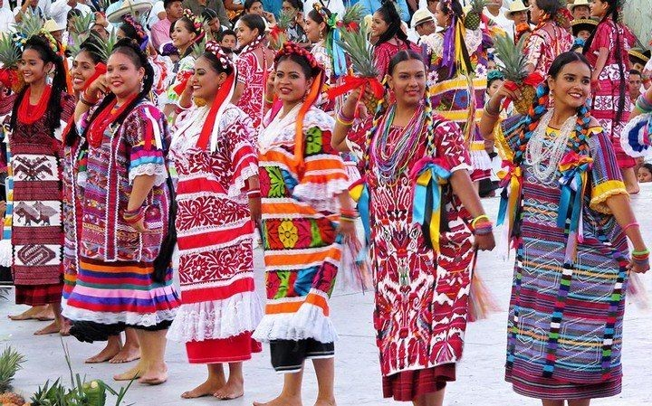
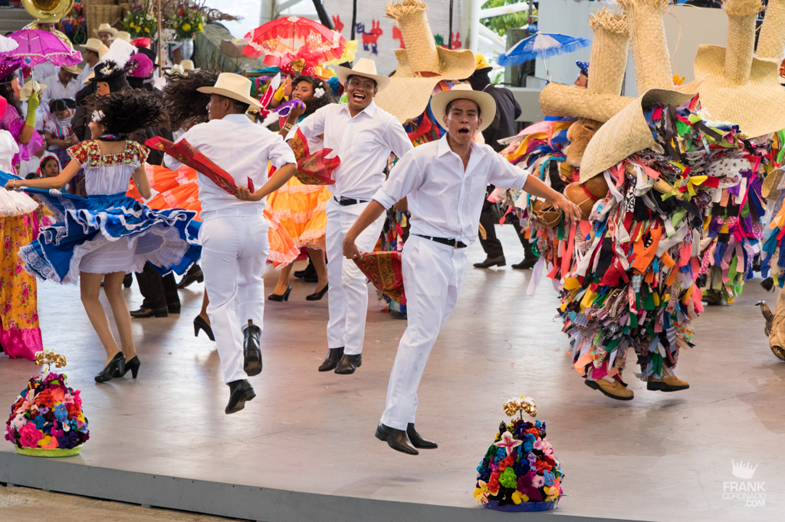
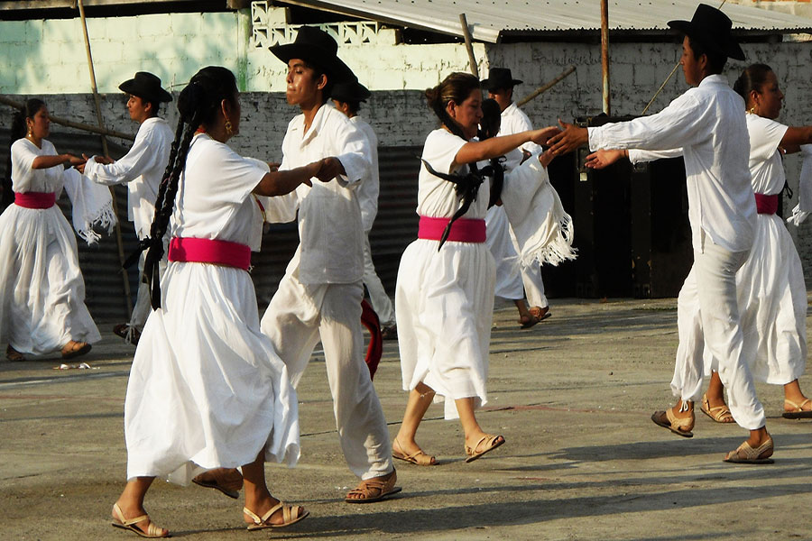
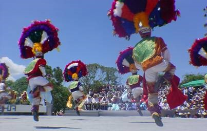

| INICIO | MÁS REGIONES |
| CUENCA DE PAPALOAPAN La región de Cuenca del Papaloapan o de Tuxtepec se caracteriza por ser próspera, Tuxtepec actualmente es la segunda ciudad más poblada del Oaxaca, siendo la región más industrializada, con mayor mestizaje y menor influencia indígena. Aun así, cobija a chinantecos, mazatecos, mixes, y zapotecos. Esta región, debido a su cercanía con Veracruz suele identificarse más con este estado que con Oaxaca, sin embargo es una región orgullosamente oaxaqueña que desde 1958 representa en los Lunes del Cerro, el Fandango Jarocho y un bailable que presenta rasgos más oaxaqueños, llamado Flor de Piña. |
 |
|  | SIERRA SUR >Esta región se encuentra al suroeste del estado, su riqueza forestal y producción de café hacen que sea considerada la reserva de recursos del estado. También de aquí son originarias las chilenas, sones populares de esta región. La ciudad más poblada e importante de la región es Miahuatlán. La Región de la Sierra Sur cobija a zapotecos, mixtecos, chatinos, chontales, amuzgos y triquis; En la Guelaguetza es caracterizado por el baile de las chilenas de Putla. |
| SIERRA NORTE La Sierra Norte de Oaxaca es única en términos de diversidad de flora y fauna con 7 tipos de vegetación y diferentes tipos de bosque que cobijan a Zapotecos, Chinantecos y Mixes que se han dedicado a la tarea de proteger más de 150,000 hectáreas de bosque. Las comunidades de la Sierra Norte se caracterizan por tener un maravilloso conocimiento ancestral heredado de sus antepasados, sobre el uso racional, protección y conservación de los recursos naturales. Hoy en día, estas comunidades aportan a esta región una cuidadosa manera de relacionarse con la naturaleza. |
 |
|  | VALLES CENTRALES Si eres de la región del valle seguramente sabes que esta región se ha distinguido siempre por su producción textil y alfarera, que se ha convertido en una actividad especializada, propia de sus pueblos; Teotitlán del Valle es famosa por usar materiales 100% naturales, Atzompa es famosa por su vidriada de color verde y San Bartolo Coyotepec por su característico barro negro sin vidriar, además esta región es famosa por su producción de huaraches. Una de las zonas más famosas de esta región es Monte Albán. La región del Valle en la Guelaguetza se representa con el baile La Danza de la Pluma. |